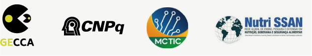

UNIVERSIDADE FEDERAL DE GOIÁS • UFG
Reitoria
Edward Madureira Brasil
Vice-Reitoria
Sandramara Matias Chaves
Grupo de Estudos em Consumo Cultura e Alimentação • GECCA
Coordenação
Janine Helfst Leicht Collaço
Integrantes
Adriana Stella Domingues Camelo Marcucci
Amélia Cristina Stival Duarte
Andrea Sugai Mortoza
Brennda Maíra Gonsalves Leitão
Carolina Cadima Fernandes Nazareth
Cláudia Peixoto Cabral
Daniel Coelho de Oliveira
Egrimont Wagner Teixeira Neto
Elaine de Azevedo
Fabíola Ribeiro Duarte
Filipe Augusto Couto Barbosa
Guilherme Neves Piedade Louzada
Janine Helfst Leicht Collaço
Jeancarlos Rodrigues de Oliveira
Joana Angélica Pellerano
Joana Aparecida Fernandes Silva
Juliana Abonizio
Katia Karam Toralles
Larissa de Farias Alves
Lizia de Oliveira Carvalho
Manuela Alvarenga do Nascimento
Marlon Henrique Costa de Castro
Nayala Nunes
Osmar Lúcio Custódio
Talita Prado Barbosa Roim
Thais Dias Luz Borges Santos
Tiago Miguel Jacomo
Yasmim Stella Domingues Marcucci.
Comissão técnica
Cláudia Peixoto Cabral
Egrimont Wagner Teixeira Neto
Lizia de Oliveira Carvalho
Multiplicadores em SSAN: Saberes e Práticas Alimentares do Centro-Oeste
Coordenação do curso
Janine Helfst Leicht Collaço
Organização do e-book
Janine Helfst Leicht Collaço
Talita Prado Barbosa Roim
Lizia Oliveira Carvalho
Autores / Professores dos módulos
Carolina Cadima Fernandes Nazareth
Kátia Karam Toralles
Larissa de Farias Alves
Lizia de Oliveira Carvalho
Tiago Miguel Jácomo
Centro Integrado de Aprendizagem em Rede • CIAR
Direção
Marlília de Goyaz
Vice-Direção
Silvia Carla Nunes de Figueiredo Costa
Coordenação de Publicação
Ana Bandeira
Coordenação de Publicação Multimidia
Wagner Bandeira
Design Gráfico - Projeto Editorial
Equipe de Publicação CIAR
Criação do Projeto Gráfico
Fernanda Soares
Desenvolvimento do e-book
Leandro Luiz de Abreu Pimentel
Diagramação
Fernanda Soares
Criação e edição de imagens
Mateus Feitosa